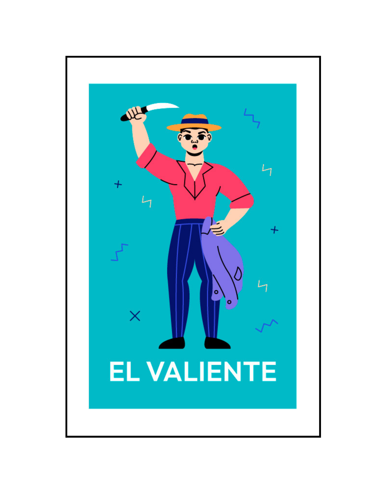

|

EL VALIENTE
|
'En la desgracia sabe mostrar al riesgo el corazón valiente'
Pour mercy, mercy on me Set fire to history I'm breaking my own rules I'm crying like a fool Tall stories on the page Short glories on the fade I've been close enough to touch But I never cared for love It's a church of burnt romances And I'm too far gone to pray, its a solo song and its only for the brave. If the truth tell Darling, you feel Like there ain't enough dying stars in your sky It's a tall tale And it's only hello, hello, no goodbye (Goodbye) Pour mercy, mercy on me I'll fall upon my knees And they'll say, "I told you so" Come on, when you know, you know All the lonely shadow dances From the cradle to the grave It's a solo song And it's only for the brave